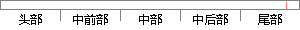

在答卷页面如实填写问卷信息，完成信息填写后点击提交按钮。
片段位置图

相似结果|
相似片段 1： 4-3 系统功能测试结果1.6新增问卷点击“新增问卷”按钮，能够弹出“新增问卷”页面，填写相关信息后点击“提交”，返回“问卷列表”页面，并显示新增的问卷已经添加与预期一致1.7 问卷问题管理选中某
相似片段 2：营销经理的页面，按自己要求填写需要修改的地方，单击提交存盘即完成操作。如图 3-8所示：图 3-8 修改营销经理页面10、删除营销经理在营销经理信息列表中勾选营销经理后点击”提交存盘”按钮即可删除选中
相似片段 3：点击查询以了解所输入号段是否满足验旧条件，点击提交可进入下一步页面，在该页面填写发票名称、纳税人名称等信息，页面如下图所示：图 7-7 发票验旧页面48证明该模块使用正常，完成测试目标。
相似片段 4：的调查信息：survy!submit．action：在实训调查页面点击“提交”按钮，就可以执行submit()函数，把填写的问卷提交给系统。；如图5—13为学生用户的实训调查页面图5-13实训调查页面用户
相似片段 5：条件页面，填写完成查询条件后，点击“提交”按钮，系统按填写的查询条件组合查询，匹配显示列表信息。正式学生数据导入 正式学生数据导入入口点 点击菜单栏内的学生系统——学生综合管理——新生管理——学生正式数据导入超级链接，即可调出学生正式数据导入页面。
|
※ 片段修改建议 ※
近似词参考：- 如实：照实
系统自动生成语句： 在答卷页面照实填写问卷信息，完成信息填写后点击提交按钮。
注：本片段修改建议为系统自动生成，仅供参考。